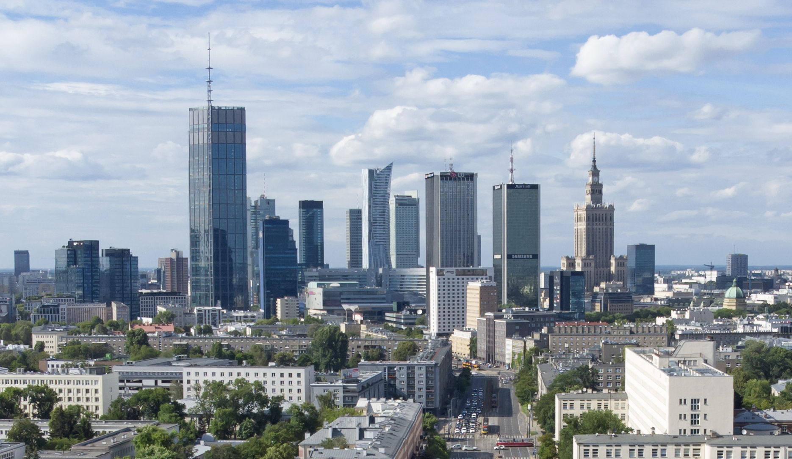

Дата народження: 20.12.2006 Місце народження: м.Київ
Освіта: Гімназія №191 м.Київ
Національний технічний університет України «Київський політехнічний інститут імені Ігоря Сікорського»
Мої захоплення:
Улюблені фільми:
Варша́ва (пол. Warszawa), офіційно столичне місто Варшава — столиця Польщі з 1596, порт на річці Вісла, адміністративний центр Мазовецького воєводства. Місто є місцем розташування центральних органів влади Республіки Польща, іноземних місій, штаб-квартир значної кількості підприємств та громадських об'єднань, що працюють в Польщі.
